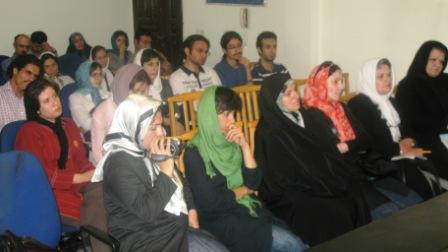

پذيرش > سایت نوشته ها > حذف ماده های 23 و 25 لایحه خانواده پایان ماجرا نیست
 تاکید فعالان جنبش زنان تاکید فعالان جنبش زنان

 حذف ماده های 23 و 25 لایحه خانواده پایان ماجرا نیست حذف ماده های 23 و 25 لایحه خانواده پایان ماجرا نیست
23 شهریور 1387 - کانون زنان ایرانی / فریده غائب - نسخه قابل چاپ
تلاش فعالان زن در اعتراض به لایحه حمایت از خانواده هرچند منجر به حذف ماده های 23 و 25 و نیز اصلاح ماده 53 شد اما این پایان ماجرا نیست و اصلاح همه اشکالات این لایحه و بررسی تک تک مواد آن هدف این فعالان جنبش زنان است.
در نشستی که پنج شنبه عصر در دفتر تحکیم وحدت برگزار شد جمعی از حقوق دانان،روزنامه نگاران و فعالان جنبش زنان ایران دور هم گرد آمدند تا بگویند نتیجه امید بخش حذف دو ماده چند همسری و مالیات بر مهریه و اصلاح ماده 53 به خاطر ائتلافی است که گروههای مختلف زنان علیه لایحه حمایت از خانواده شکل دادند و این ائتلاف راه خود را تا رفع همه تبعیض های موجود در لایحه ادامه می دهد.
لایحه حمایت از خانواده تیر ماه سال گذشته توسط معاونت قضایی قوه قضاییه تهیه و به هیات دولت داده شد. دولت نیز با اضافه کردن دو ماده 23 و 25 و انجام تغییراتی در این لایحه، آن را به مجلس ارسال کرد.
از همان سال گذشته زنان متوجه شدند که چه اتفاقی در حال وقوع است به همین دلیل اعتراض های خود را علیه لایحه آغاز کردند اما دو ماه پیش که کلیات لایحه در کمیسیون قضایی به تصویب رسید اعتراض های زنان نیز شکلی سازمان یافته به خود گرفت و در قالب ائتلاف علیه این لایحه اقداماتی را انجام شد.
فریده غیرت،حقوق دان که از همان سال گذشته مخالفت علنی خود را درباره لایحه اعلام کرده بود با حضور در این جلسه نیز از دیگر عیب های حقوقی این لایحه سخن می گوید. او این لایحه را لایحه ضد خانواده می خواند و نه لایحه ضد زن:"بر عکس تصوری که می شود مرکزیت خانواده مرد نیست بلکه مرکز ثقل خانواده زن است .زن اگر دارای حقوقی می بود و تحت چتر حمایتی قانون بود شوهر راضی و فرزندان راضی را تربیت می کرد و تحویل جامعه می داد."
"ایجاد زمینه های مساعد برای شخصیت زن و احیای حقوق مادی و معنوی،حمایت از مادران به ویژه در دوران بارداری و حضانت فرزند و حمایت از کودکان بی سرپرست،ایجاد دادگاه صالح برای حفظ کیان و بقای خانواده،ایجاد بیمه خاص بیوگان و زنان سالمند و بی سرپرست و اعطای قیمومت فرزندان به مادران شایسته در جهت قبطه آنها در صورت نبودن ولی شرع."
اینها پنج بند اصل 21 قانون اساسی است که غیرت با خواندن آنها می گوید:" در گزارش توجیهی این لایحه از طرف قوه قضاییه به اصل 21 قانون اساسی استناد شده درحالی که اجرای تنها یک بند از پنج بند اصل 21 در لایحه آمده که آن هم متاسفانه فقط ایین دادرسی دادگاههای خانواده است."
نهاد مشاوره خانواده که این روزها به عنوان نقطه قوت لایحه از طرف موافقان لایحه مطرح می شود به نظر غیرت دارای مشکل حقوقی است:"این قانون نهادی را به عنوان نهاد مشاوره در کنار دادگاههای خانواده ایجاد کرده است و تاکیدش بر استفاده از زنان حقوق دان در این نهاد است در حالی که در قانون درباره قضاوت زن منع صریح داریم.الان نیز در دادگاههای خانواده مشاوران زن هم فعال هستند بار اصلی کار روی دوش آنهاست اما حق قضاوت و صدور رای را ندارد.تکلیف این مورد باید روشن شود .همچنین اگر نظر مرکز مشاوره با نظر گروه داوران تضاد داشت تکلیف چیست؟ در این قانون نوشته شده که دادگاه نظر مرکز مشاوره را می پذیرد مگر انکه نظریه مزبور خلاف اوضاع و احوال مسلم باشد.معنی این جمله یعنی چه؟ "
یکی از ایرادات حقوقی غیرت برلایحه عدم ثبت ازدواج منقطع یا همان متعه است که این حقوق دان اعتقاد دارد عدم ثبت متعه خطرناک و غیر قابل کنترل است و زندگی زنانی که خواسته یا ناخواسته وارد این نوع ازدواج شده اند در خطر است چراکه قانون هیچ حمایتی از آنها نمی کند.
حذف اجرت المثل در لایحه حمایت از خانواده یکی از ماده هایی است که باز هم زنان از این ماده متضرر می شوند.
فریده غیرت درباره اش می گوید:"بر اساس مصوبه ای در سال های اخیر مردی که قصد جدایی از همسرش را داشته باشد و این تقاضای جدایی هم به علت قصور زن نیست مرد باید به تعداد سال های ازدواجش به همسرش اجرت المثل بپردازد.این قانون حامی زن بود در حالی که در لایحه اجرت المثل فراموش شده است."
برداشتن حبس و مقرر کردن مجازات نقدی در عدم ثبت نکاح از دیگر موارد مورد اعتراض غیرت است.او ادامه می دهد:"ازدواج با دختری که به سن قانونی نرسیده مجازات دارد هم برای پدر و هم فردی که با این دختر ازدواج کرده اما در این قانون گفته نشده که تکلیف این ازدواج چیست؟ "
غیرت هرچند با صراحت اعلام می کند حذف ماده های 23 و 25 و اصلاح ماده 53 به معنای ختم به خیر شدن نیست اما این را نتیجه اتحادی می داند که بین گروههای زنان ایجاد شد و همچنان هم باید ادامه داشته باشد.
اعظم نوری از زنان اصلاح طلب از اقدام هایی می گوید که علیه این لایحه انجام داده اند از جمله برگزاری نشست با فراکسیون اقلیت و نیز فراکسیون زنان در مجلس، شرکت در برنامه تلویزیونی اردیبهشت.
بخشی از سخنان او به اصل دهم قانون اساسی اشاره می کند اصلی که خانواده را واحد بنیادین جامعه تلقی کرده که همه قوانین نیز باید در جهت آسایش این نهاد باشد:"وظیفه دولت پاسداری از خانواده و آسان کردن ازدواج برای نسل جوان است و نه تهیه ماده ای برای ازدواج مجدد."
اوهمچنین پیشنهاد هایی برای اصلاح لایحه حمایت از خانواده دارد:"هر چند ایجاد مراکز مشاوره در کنار دادگاه ها پیشنهاد خوبی است اما دولت با وارونه کردن این ماده ذکر کرده که دعوای خانوادگی ابتدا به دادگاه می رود و اگر قاضی تشخیص داد به مراکز مشاوره ارجاع داده می شود.در حالی که ابتدا باید مشکلات در مراکز مشاوره مطرح شود.همچنین در لایحه پیشنهادی قوه قضاییه عنوان شده بود که دادگاه باید از تصمیم مراکز مشاوره تبعیت بکند اما دولت این کلمه "باید" را به "می تواند" تغییر داده است."
واگذاری دعاوی خانواده به شورای حل اختلاف از دیگر مواردی است که صدراعظم نوری به آن اشاره می کند:"اگر دادگاه خانواده هست پس چه نیازی به شورای حل اختلاف است؟پس پیشنهاد حف این ماده را داریم."
ازدواج موقت نیز از دیگر مواردی است که نوری درباره اش پیشنهاد می دهد که مردان متاهل حق ازداوج موقت نداشته باشند و این راهی است برای ضابطه مند شدن این قانون است.
***
دومین پنل این نشست به روزنامه نگاران اختصاص دارد. روزنامه نگارانی که با شرکت در ائتلاف اعتراضی به لایحه خانواده و چانه زنی با مدیران رسانه هایشان در حذف دو ماده23 و 25 تاثیر به سزایی داشتند.
آسیه امینی از روزنامه نگاران مستقل و فعال در جنبش زنان از تجربه حضور خود در این ائتلاف سخن می گوید:"تجربه ائتلاف زنان برای مقابله با تصویب لایحه ضد خانواده نشان داد که هنوز می توان امیدوار بود که افراد جدای از اختلاف ها و ایدئولوژی های شان به خاطر یک هدف مشترک تلاش کنند.ای کاش آزادی بیان نیز مانند چند همسری می توانست فصل مشترک همه ما باشد."
او همچنین از خلاهای قانونی می گوید که موجب افزایش جرم و جنایت در خانواده ها شده است:" جرم بیش از 90 درصد زنان به خاطر خلا های قانونی بوده است. وقتی وارد جزییات زندگی زنی محکوم به سنگسار می شوی می بینی که او بارها و بارها برای حل مشکل خانوادگی به دادگاه ، مراجع قانونی و حتی ریش سفیدها مراجعه کرده اما پاسخی نگرفته است و حال چرا این لایحه قانونی برای آنها و یا قتل های ناموسی ندیده است؟"
ژیلا بنی یعقوب ، روزنامه نگاری که خود در تشکیل ائتلاف علیه لایحه موسوم به خانواده شرکت داشته درباره روند شکل گیری این ائتلاف می گوید:"اولین جرقه تشکیل ائتلاف بعد از انتشار خبر تصویب کلیات لایحه در کمیسیون قضایی بود که گروهی از فعالان زن از طریق ایمیل بحث هایشان را درباره لایحه مطرح کردند و به تدریج اعضای این گروه ایمیلی گسترده شد به طوری که ائتلاف اولیه با عضویت120 نفر از فعالان جنبش زنان ،فعالان سیاسی،روزنامه نگاران و حتی ایرانیان خارج از کشور پایه گذاری شد و به تدریج سه هزار نفر به آن پیوستند."
بنی یعقوب می گوید:"تجربه این ائتلاف به من آموخت که با وجود همه اختلاف ها می توان برای یک هدف مشترک کار کرد. با وجود بسیاری از سوء تفاهم ها و اختلاف هایی که در جنبش زنان وجود داشت زنان در این ائتلاف توانستند به خوبی در کنار یکدیگر علیه لایحه موسوم به لایحه حمایت از خانواده فعالیت کنند. "
بنی یعقوب ادامه می دهد:"اگر با هم باشیم می توانیم پیروز باشیم حتی اگر این پیروزی کوچک باشد."
ژیلا بنی یعقوب ،درپایان نامه ای کوتاه را که در روند بحث های ائتلاف فعالان و گروههای جنبش زنان علیه لایحه خانواده خطاب به دوستانش نوشته بود ،قرائت کرد:
"دوستان خیلی عزیزم!باور کنید بحث های حاشیه ای کم کم دارد از خود متن و هدف اصلی مهم تر می شود.مواظب باشیم یک وقت ها حفظ ساختارها مهم تر از خود هدف نشود. ما تجربه های تلخ تاریخی در این باره کم نداریم.با مروری بر تاریخ چهل —پنجاه ساله معاصر تاریخ ایران در می یابیم که انسانهای مخلص فداکار، پرکار و تواناتر از ما بسیار بودند که مهمترین سرمایه زندگی را که جانشان بود فدا کردند اما کمترین نتیجه مطلوب مورد نظر خود را گرفتند. بسیاری شان سالها بعد در خاطرات خود نوشتند تمام این مردان و زنان مخلص از یک مشکل بزرگ رنج می بردند ،هرکس می خواست زیر پرچم او و تحت لوای ایدلوژی و سابقه مبارزاتی او حرکتها انجام شود ،سرانجام روزی فرا رسید که هدف را گم و شروع به نابودی یکدیگر کردند خواهش می کنم مسائل حاشیه ای را زیاد بزرگ نکنیم و به هدف اصلی فکر کنیم . نکند سالها بعد خودمان از این همه بحث حاشیه ای و سوتفاهم ها پشیمان شویم. ببخشید من همه مان را می گویم ،اول از همه به خودم این نهیب را می زنم :نکند آنقدر فرصت ها را با انواع و اقسام سوتفاهم ها ،اختلاف ها و بحث های حاشیه ای از دست بدهیم که بعد ها توی سر خودمان بزنیم و این پشیمانی تا یکصد سال بعد برای نسل های پس از ما هم ادامه داشته باشد."
محبوبه حسین زاده از دیگر روزنامه نگارانی است که در اعتراض به این لایحه بارها و بارها گزارش نوشته است.او با حضور در این نشست از روزنامه هایی می گوید که با وجود سانسور و سختی های فراوان علیه لایحه نوشتند.او بطور مشخص از روزنامه های اعتماد ،اعتمادملی ،سرمایه و کارگزاران در این مسیر یاد می کند.
***
نمایندگان گروههای مادران صلح، میدان زنان، کمیسیون زنان دفتر تحکیم و کمپین یک میلیون امضا برای تغییر قوانین نابرابر از حاضران سومین پنل این نشست بودند.
مینو مرتاضی لنگرودی یکی از مادران صلح با اشاره به چگونگی شکل گیری سرمایه های اجتماعی در یک جنبش می گوید:"سرمایه های اجتماعی ما همان مردم هستند که در صورت وجود یک درد یا شادی مشترک دور هم جمع می شوند.این درد یا شادی مشترک خاصیت همگرا شدن دارد."
به اعتقاد مرتاضی لنگرودی لایحه حمایت از خانواده درد مشترکی بود که توانست همه طیف ها اعم از مذهبی، سکولار و حتی سنتی ترین تفکر در حوزه های علمیه را دور خود جمع کند.
او با تایید این نکته که وقتی این اشتراک وجودی و درونی باشد کمتر امکان ابزار شدن دارد می گوید:"نباید نگاهی ابزار گرایانه به درد مشترک داشته باشیم."
مرتاضی بخشی از سخنانش انتقاد علیه کسانی بود که در شکل گیری ائتلاف حضور داشتد:" اطلاع رسانی ها درباره لایحه شخصیت محور بود و حتی این لایحه تبدیل شد به ابزار به جای اینکه درد مشترک را بیان کند.به جای شخصیت پروری بهتر است از شکاف درون حاکمیت سود جست."
زهرا مینویی از اعضای گروه میدان زنان از اقدام های این گروه برای مقابله با لایحه حمایت از خانواده می گوید.اینکه سال گذشته با انتشار کارت پستال هایی به نام "نه به لایحه خانواده" اعتراض خود را آغاز کردند و با برگزاری جلسه های نقد حقوقی و اجتماعی لایحه و انتشار مطالبی در رسانه اعتراض خود را ادامه دادند.و در حال حاضر این گروه در صدد تهیه پیشنهادهای اصلاحی لایحه هستند تا آن را به مجلس ارسال کنند.
نسیم سرابندی، نماینده کمیسیون زنان تحکیم وحدت نیز ائتلاف را ایده ای می داند که جنبش دانشجویی نباید نسبت به آن بی توجهی کند:"این ائتلاف و جنبش زنان ایران ایده های جدیدی داد تا در جنبش دانشجویی آنها را به کار بگیریم. ایجاد حساسیت های جنسیتی یکی از نکاتی است که در میان دانشجویان پایین است و ارتقای این حساسیت باید تلاش کرد."
آیدا سعادت از اعضای کمپین یک میلیون امضا نیز می گوید:"کار ما در ائتلاف تمام نشده است.سایه سنگین دو ماده 23 و 25 موجب مطرح نشدن دیگر ماده های این لایحه شد که باید با تلاش در این ائتلاف تک تک موادی را بررسی کنیم که علیه زنان و خانواده است."
او درباره اقدامهای کمپین برای به تصویب نرسیدن لایحه می گوید:"در شهریور ماه سال گذسته به محض طرح چنین لایحه ای جلسه نقد برگزار و فعالیت های رسانه ای مان را شروع کردیم. انتشار بیانیه ای با امضای بیش از 2500 نفر از مخالفان لایحه، انتشار کتابی درباره چند همسری و نقد لایحه ،دیدار با نمایندگان مجلس و پیگیری آن از طریق کمیته های مختلف کمپین از دیگر اقداماتی است که اعضای کمپین علیه لایحه حمایت از خانواده انجام داده اند.
آیدا سعادت با اشاره به تلاش وسیع رسانه های کمپین یک میلیون امضا از جمله تغییر برای برابری ،کانون زنان ایرانی و مدرسه فمینیستی و وبلاگ های کمپین در شهرهای مختلف ایران و همینطور خارج از کشور اشاره و برخی از اقدام های عملی را در ائتلاف مرور می کند:"توزیع بروشورهایی به منظور آگاهی بخشی افراد جامعه درباره این لایحه،تهیه برچسب هایی که روی آنها شعارهایی علیه لایحه نوشته شده بود،ایجاد وبلاگی برای اطلاع رسانی دقیق درباره حوادث مربوط به لایحه،دیدار با نمایندگان مجلس و برگزاری نشست های مختلف."
***
"خود ائتلاف بر ضد لایحه بیش از دستاوردهایش ارزشمند است." فخر السادات محتشمی پور از اعضای زنان مجمع اصلاح طلب این جمله را می گوید و از گروههای گمنامی یاد می کند که شاید نام آنها مطرح نشده اما در پیشبرد هدف یعنی اعتراض دربرابر لایحه کارهای بسیاری انجام دادند.
او نیز درباره اقدام های گروه خود می گوید:"سهیلا جلودار زاده اولین فردی بود که خبر از وجود این لایحه در مجلس هفتم را داد و از همان زمان ما نیز وارد مذاکره و لابی با نمایندگان مجلس شدیم. همچنین برگزاری دو جلسه بررسی فقهی و حقوقی و جلسه نقد فیلم پیامک از دیار باقی هم در جهت اعتراض به لایحه برگزار شد.
حضور نمایندگان گروههای مختلف از جمله زنان ورزشکار،هنرمند ؛ تهیه نامه ی نقد تحلیل لایحه ؛ برگزاری جلسات نقد و بررسی لایحه توسط زنان احزاب و حزب هایی که گروه زنان داشتند از دیگر تلاش هایی است که محتشمی پور به آن اشاره می کند و معتقد است در این بین تاثیر فضای مجازی و اینترنت نیز فراموش ناشدنی است.
کانون زنان ایرانی
ارسال به
بالاترین
،
توییتر
،
فریندفید
،
فیسبوک
در همين بخش :
 یک خبر تلخ؟ یک قانونشکنی؟ یک تصمیم بخشنامهای جدید؟ یک خبر تلخ؟ یک قانونشکنی؟ یک تصمیم بخشنامهای جدید؟
چرا بایست به سکسوالیته پرداخت؟ / نفیسه آزاد
آزارجنسی خانگی؛ «قربانی» نه، «نجات یافته»
زنان، بزرگترین بازندگان بهار عرب
سانسور از دیدگاه جنسیتی/الهه امانی
ديگر بخش ها :
طرح یک میلیون امضا
|
مقالات
|
سایت نوشته ها
|
اخبار
|
گزارش كمپين
|
گفت و گو
|
علیه سکوت
|
كوچه به كوچه
|
نامه های شما
|
گزارش ویژه
|
گفتگو با اعضا
|
ویژه سالگرد کمپین
|
تصویر برابری
|
دل آرام علی
|
تریبون
|
مقالات
|
تاریخ شفاهی
|
خارج از چارچوب
|
کتابخانه
|
درباره کمپین
|
کمپین در شهرها
|
کمپین در بند
|
صدای تغییر
|
ویژه 22 خرداد
|
لایحه حمایت از خانواده
|
گالری
|
عشا مومنی
|
امیر یعقوبعلی
|
خدیجه مقدم
|
راحله عسگری زاده و نسیم خسروی
|
پروین اردلان،جلوه جواهری، مریم حسین خواه، ناهید کشاورز
|
زینب پیغمبرزاده
|
سعیده امین، سارا ایمانیان، محبوبه حسین زاده، ناهید کشاورز و همایون نامی
|
احترام شادفر
|
نسیم سرابندی زاده،فاطمه دهدشتی
|
وبلاگ مهمان
|
پرونده خرم آباد
|
دستگیری ها
|
مریم مالک
|
پرستو اللهیاری
|
مهرنوش اعتمادی
|
سمیه رشیدی
|
Other Languages
|
همراهان
|
«فراخوان کمپین ده روز با بهاره هدایت»
| English
|